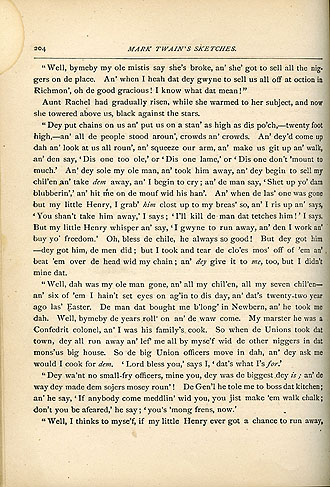
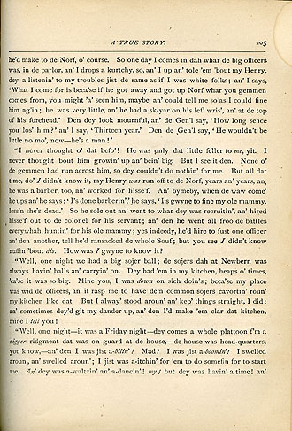
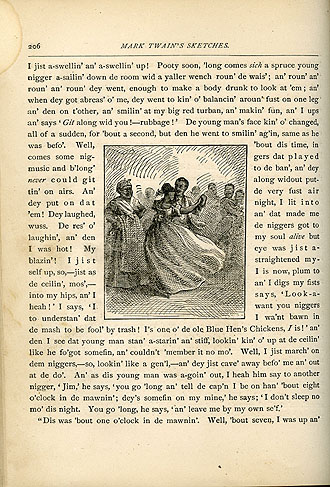
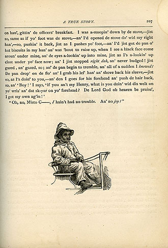

| As it appeared in Mark Twain's Sketches: New and Old (Hartford: American Publishing Company, 1875). In the book the tale appeared between "A Curious Dream" and "Personal Habits of the Siamese Twins." True Williams, who drew the pictures you can see below, had just illustrated Tom Sawyer for MT and the American Publishing Company. As always with an edition of MT's work published in his times, it's interesting to think about what is and what isn't illustrated. |
    |